Graphs of the Other Trigonometric Functions
We know the tangent function can be used to find distances, such as the height of a building, mountain, or flagpole. But what if we want to measure repeated occurrences of distance? Imagine, for example, a fire truck parked next to a warehouse. The rotating light from the truck would travel across the wall of the warehouse in regular intervals. If the input is time, the output would be the distance the beam of light travels. The beam of light would repeat the distance at regular intervals. The tangent function can be used to approximate this distance. Asymptotes would be needed to illustrate the repeated cycles when the beam runs parallel to the wall because, seemingly, the beam of light could appear to extend forever. The graph of the tangent function would clearly illustrate the repeated intervals. In this section, we will explore the graphs of the tangent and other trigonometric functions.
Analyzing the Graph of y = tan x
We will begin with the graph of the tangent function, plotting points as we did for the sine and cosine functions. Recall that
The period of the tangent function is because the graph repeats itself on intervals of where is a constant. If we graph the tangent function on to we can see the behavior of the graph on one complete cycle. If we look at any larger interval, we will see that the characteristics of the graph repeat.
We can determine whether tangent is an odd or even function by using the definition of tangent.
Therefore, tangent is an odd function. We can further analyze the graphical behavior of the tangent function by looking at values for some of the special angles, as listed in Table 1.
| 0 | |||||||||
| undefined | –1 | 0 | 1 | undefined |
These points will help us draw our graph, but we need to determine how the graph behaves where it is undefined. If we look more closely at values when we can use a table to look for a trend. Because and we will evaluate at radian measures as shown in Table 2.
| 1.3 | 1.5 | 1.55 | 1.56 | |
| 3.6 | 14.1 | 48.1 | 92.6 |
As approaches the outputs of the function get larger and larger. Because is an odd function, we see the corresponding table of negative values in Table 3.
| −1.3 | −1.5 | −1.55 | −1.56 | |
| −3.6 | −14.1 | −48.1 | −92.6 |
We can see that, as approaches the outputs get smaller and smaller. Remember that there are some values of for which For example, and At these values, the tangent function is undefined, so the graph of has discontinuities at At these values, the graph of the tangent has vertical asymptotes. Figure 1 represents the graph of The tangent is positive from 0 to and from to corresponding to quadrants I and III of the unit circle.

Graphing Variations of y = tan x
As with the sine and cosine functions, the tangent function can be described by a general equation.
We can identify horizontal and vertical stretches and compressions using values of and The horizontal stretch can typically be determined from the period of the graph. With tangent graphs, it is often necessary to determine a vertical stretch using a point on the graph.
Because there are no maximum or minimum values of a tangent function, the term amplitude cannot be interpreted as it is for the sine and cosine functions. Instead, we will use the phrase stretching/compressing factor when referring to the constant
Graphing One Period of a Stretched or Compressed Tangent Function
We can use what we know about the properties of the tangent function to quickly sketch a graph of any stretched and/or compressed tangent function of the form We focus on a single period of the function including the origin, because the periodic property enables us to extend the graph to the rest of the function’s domain if we wish. Our limited domain is then the interval and the graph has vertical asymptotes at where On the graph will come up from the left asymptote at cross through the origin, and continue to increase as it approaches the right asymptote at To make the function approach the asymptotes at the correct rate, we also need to set the vertical scale by actually evaluating the function for at least one point that the graph will pass through. For example, we can use
because
Sketching a Compressed Tangent
Sketch a graph of one period of the function
Solution
First, we identify and

Because and we can find the stretching/compressing factor and period. The period is so the asymptotes are at At a quarter period from the origin, we have
This means the curve must pass through the points and The only inflection point is at the origin. Figure 2 shows the graph of one period of the function.

Graphing One Period of a Shifted Tangent Function
Now that we can graph a tangent function that is stretched or compressed, we will add a vertical and/or horizontal (or phase) shift. In this case, we add and to the general form of the tangent function.
The graph of a transformed tangent function is different from the basic tangent function in several ways:
Graphing One Period of a Shifted Tangent Function
Graph one period of the function
Solution
- Step 1. The function is already written in the form
- Step 2. so the stretching factor is
- Step 3. so the period is
- Step 4. so the phase shift is
- Step 5-7. The asymptotes are at and and the three recommended reference points are and The graph is shown in Figure 3.
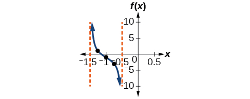
Figure 3
Identifying the Graph of a Stretched Tangent
Find a formula for the function graphed in Figure 4.
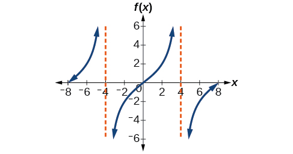
Solution
The graph has the shape of a tangent function.
- Step 1. One cycle extends from –4 to 4, so the period is Since we have
- Step 2. The equation must have the form
- Step 3. To find the vertical stretch we can use the point
Because
This function would have a formula
Analyzing the Graphs of y = sec x and y = cscx
The secant was defined by the reciprocal identity Notice that the function is undefined when the cosine is 0, leading to vertical asymptotes at etc. Because the cosine is never more than 1 in absolute value, the secant, being the reciprocal, will never be less than 1 in absolute value.
We can graph by observing the graph of the cosine function because these two functions are reciprocals of one another. See Figure 6. The graph of the cosine is shown as a dashed orange wave so we can see the relationship. Where the graph of the cosine function decreases, the graph of the secant function increases. Where the graph of the cosine function increases, the graph of the secant function decreases. When the cosine function is zero, the secant is undefined.
The secant graph has vertical asymptotes at each value of where the cosine graph crosses the x-axis; we show these in the graph below with dashed vertical lines, but will not show all the asymptotes explicitly on all later graphs involving the secant and cosecant.
Note that, because cosine is an even function, secant is also an even function. That is,
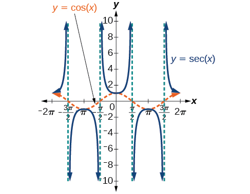
As we did for the tangent function, we will again refer to the constant as the stretching factor, not the amplitude.
Similar to the secant, the cosecant is defined by the reciprocal identity Notice that the function is undefined when the sine is 0, leading to a vertical asymptote in the graph at etc. Since the sine is never more than 1 in absolute value, the cosecant, being the reciprocal, will never be less than 1 in absolute value.
We can graph by observing the graph of the sine function because these two functions are reciprocals of one another. See Figure 7. The graph of sine is shown as a dashed orange wave so we can see the relationship. Where the graph of the sine function decreases, the graph of the cosecant function increases. Where the graph of the sine function increases, the graph of the cosecant function decreases.
The cosecant graph has vertical asymptotes at each value of where the sine graph crosses the x-axis; we show these in the graph below with dashed vertical lines.
Note that, since sine is an odd function, the cosecant function is also an odd function. That is,
The graph of cosecant, which is shown in Figure 7, is similar to the graph of secant.

Graphing Variations of y = sec x and y= csc x
For shifted, compressed, and/or stretched versions of the secant and cosecant functions, we can follow similar methods to those we used for tangent and cotangent. That is, we locate the vertical asymptotes and also evaluate the functions for a few points (specifically the local extrema). If we want to graph only a single period, we can choose the interval for the period in more than one way. The procedure for secant is very similar, because the cofunction identity means that the secant graph is the same as the cosecant graph shifted half a period to the left. Vertical and phase shifts may be applied to the cosecant function in the same way as for the secant and other functions.The equations become the following.
Graphing a Variation of the Secant Function
Graph one period of
Solution
- Step 1. The given function is already written in the general form,
- Step 2. so the stretching factor is
- Step 3. so The period is units.
- Step 4. Sketch the graph of the function
- Step 5. Use the reciprocal relationship of the cosine and secant functions to draw the cosecant function.
- Steps 6–7. Sketch two asymptotes at and We can use two reference points, the local minimum at and the local maximum at Figure 8 shows the graph.
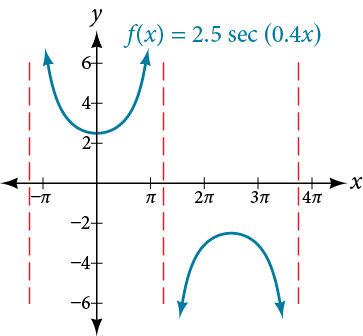
Figure 8
Graphing a Variation of the Secant Function
Graph one period of
Solution
- Step 1. Express the function given in the form
- Step 2. The stretching/compressing factor is
- Step 3. The period is
- Step 4. The phase shift is
- Step 5. Draw the graph of but shift it to the right by and up by
- Step 6. Sketch the vertical asymptotes, which occur at and There is a local minimum at and a local maximum at Figure 9 shows the graph.

Graphing a Variation of the Cosecant Function
Graph one period of
Solution
- Step 1. The given function is already written in the general form,
- Step 2. so the stretching factor is 3.
- Step 3. so The period is units.
- Step 4. Sketch the graph of the function
- Step 5. Use the reciprocal relationship of the sine and cosecant functions to draw the cosecant function.
- Steps 6–7. Sketch three asymptotes at and We can use two reference points, the local maximum at and the local minimum at Figure 10 shows the graph.

Figure 10
Graphing a Vertically Stretched, Horizontally Compressed, and Vertically Shifted Cosecant
Sketch a graph of What are the domain and range of this function?
Solution
- Step 1. Express the function given in the form
- Step 2. Identify the stretching/compressing factor,
- Step 3. The period is
- Step 4. The phase shift is
- Step 5. Draw the graph of but shift it up
- Step 6. Sketch the vertical asymptotes, which occur at
The graph for this function is shown in Figure 11.
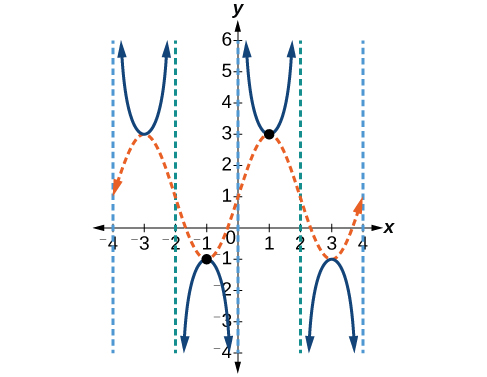
Analysis
The vertical asymptotes shown on the graph mark off one period of the function, and the local extrema in this interval are shown by dots. Notice how the graph of the transformed cosecant relates to the graph of shown as the orange dashed wave.
Analyzing the Graph of y = cot x
The last trigonometric function we need to explore is cotangent. The cotangent is defined by the reciprocal identity Notice that the function is undefined when the tangent function is 0, leading to a vertical asymptote in the graph at etc. Since the output of the tangent function is all real numbers, the output of the cotangent function is also all real numbers.
We can graph by observing the graph of the tangent function because these two functions are reciprocals of one another. See Figure 13. Where the graph of the tangent function decreases, the graph of the cotangent function increases. Where the graph of the tangent function increases, the graph of the cotangent function decreases.
The cotangent graph has vertical asymptotes at each value of where we show these in the graph below with dashed lines. Since the cotangent is the reciprocal of the tangent, has vertical asymptotes at all values of where and at all values of where has its vertical asymptotes.
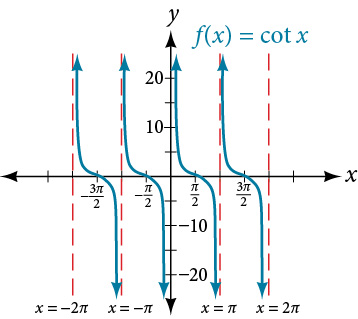
Graphing Variations of y = cot x
We can transform the graph of the cotangent in much the same way as we did for the tangent. The equation becomes the following.
Graphing Variations of the Cotangent Function
Determine the stretching factor, period, and phase shift of and then sketch a graph.
Solution
- Step 1. Expressing the function in the form gives
- Step 2. The stretching factor is
- Step 3. The period is
- Step 4. Sketch the graph of
- Step 5. Plot two reference points. Two such points are and
- Step 6. Use the reciprocal relationship to draw
- Step 7. Sketch the asymptotes,
The blue graph in Figure 14 shows and the green graph shows

Graphing a Modified Cotangent
Sketch a graph of one period of the function
Solution
- Step 1. The function is already written in the general form
- Step 2. so the stretching factor is 4.
- Step 3. so the period is
- Step 4. so the phase shift is
- Step 5. We draw
- Step 6-7. Three points we can use to guide the graph are and We use the reciprocal relationship of tangent and cotangent to draw
- Step 8. The vertical asymptotes are and
The graph is shown in Figure 15.

Using the Graphs of Trigonometric Functions to Solve Real-World Problems
Many real-world scenarios represent periodic functions and may be modeled by trigonometric functions. As an example, let’s return to the scenario from the section opener. Have you ever observed the beam formed by the rotating light on a fire truck and wondered about the movement of the light beam itself across the wall? The periodic behavior of the distance the light shines as a function of time is obvious, but how do we determine the distance? We can use the tangent function.
Using Trigonometric Functions to Solve Real-World Scenarios
Suppose the function marks the distance in the movement of a light beam from the top of a police car across a wall where is the time in seconds and is the distance in feet from a point on the wall directly across from the police car.
- ⓐ Find and interpret the stretching factor and period.
- ⓑ Graph on the interval
- ⓒ Evaluate and discuss the function’s value at that input.
Solution
- ⓐ We know from the general form of that is the stretching factor and is the period.

Figure 16 The vertical stretch factor of 5 means that the beam will have moved 5 feet in the one-quarter period before or after the half-period mark. This corresponds to the y-value of the standard tangent function being 1 at one-quarter of the period away from the center of the period, multiplied by the stretching factor of 5.
The period is This means that every 4 seconds, the beam of light sweeps the wall. The distance from the spot across from the police car grows larger as the police car approaches.
- ⓑ To graph the function, we draw an asymptote at and use the stretching factor and period. See Figure 17

Figure 17 - ⓒ period: after 1 second, the beam of has moved 5 ft from the spot across from the police car.
Key Equations
| Shifted, compressed, and/or stretched tangent function | |
| Shifted, compressed, and/or stretched secant function | |
| Shifted, compressed, and/or stretched cosecant function | |
| Shifted, compressed, and/or stretched cotangent function |
Key Concepts
- The tangent function has period
- is a tangent with vertical and/or horizontal stretch/compression and shift. See Example 1, Example 2, and Example 3.
- The secant and cosecant are both periodic functions with a period of gives a shifted, compressed, and/or stretched secant function graph. See Example 4 and Example 5.
- gives a shifted, compressed, and/or stretched cosecant function graph. See Example 6 and Example 7.
- The cotangent function has period and vertical asymptotes at
- The range of cotangent is and the function is decreasing at each point in its range.
- The cotangent is zero at
- is a cotangent with vertical and/or horizontal stretch/compression and shift. See Example 8 and Example 9.
- Real-world scenarios can be solved using graphs of trigonometric functions. See Example 10.
Section Exercises
Verbal
Explain how the graph of the sine function can be used to graph
Solution
Since is the reciprocal function of you can plot the reciprocal of the coordinates on the graph of to obtain the y-coordinates of The x-intercepts of the graph are the vertical asymptotes for the graph of
How can the graph of be used to construct the graph of
Explain why the period of is equal to
Solution
Answers will vary. Using the unit circle, one can show that
Why are there no intercepts on the graph of
How does the period of compare with the period of
Solution
The period is the same:
Algebraic
For the following exercises, match each trigonometric function with one of the following graphs.
![The image presents four distinct graphs, each labeled with a Roman numeral and representing a trigonometric function. Graph I shows the tangent function, y = tan(x), characterized by increasing curves passing through the origin with vertical asymptotes at x = ±π/2. Graph II depicts the cosecant function, y = csc(x), with U-shaped branches opening upwards and downwards, and vertical asymptotes at integer multiples of π, such as x = π. Graph III illustrates the cotangent function, y = cot(x), featuring decreasing curves that cross the x-axis at x = π/2, with vertical asymptotes at integer multiples of π. Graph IV represents the secant function, y = sec(x), also showing U-shaped branches opening upwards and downwards, with vertical asymptotes at odd multiples of π/2, such as x = π/2 and x = 3π/2.](../../media/CNX_Precalc_Figure_06_02_201combined.jpg)
Solution
IV
Solution
III
For the following exercises, find the period and horizontal shift of each of the functions.
Solution
period: 8; horizontal shift: 1 unit to left
For the following exercises, evaluate the transformed functions.
If find
Solution
1.5
If find
If find
Solution
5
If find
For the following exercises, rewrite each expression such that the argument is positive.
Solution
Graphical
For the following exercises, sketch two periods of the graph for each of the following functions. Identify the stretching factor, period, and asymptotes.
Solution
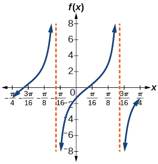
stretching factor: 2; period: asymptotes:
Solution
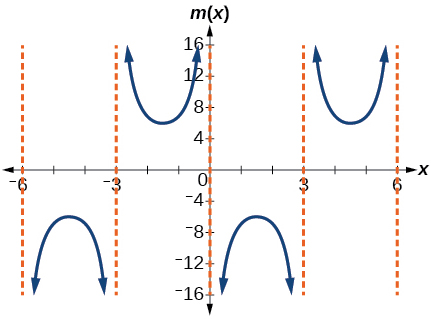
stretching factor: 6; period: 6; asymptotes:
Solution

stretching factor: 1; period: asymptotes:
Solution

Stretching factor: 1; period: asymptotes:
Solution

stretching factor: 2; period: asymptotes:
Solution

stretching factor: 4; period: asymptotes:
Solution
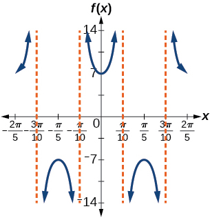
stretching factor: 7; period: asymptotes:
Solution

stretching factor: 2; period: asymptotes:
Solution

stretching factor: period: asymptotes:
For the following exercises, find and graph two periods of the periodic function with the given stretching factor, period, and phase shift.
A tangent curve, period of and phase shift
Solution
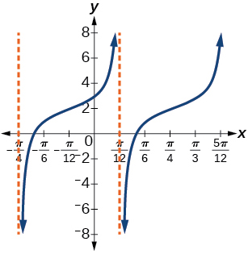
A tangent curve, period of and phase shift
For the following exercises, find an equation for the graph of each function.

Solution
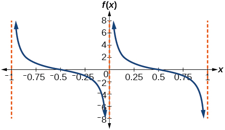
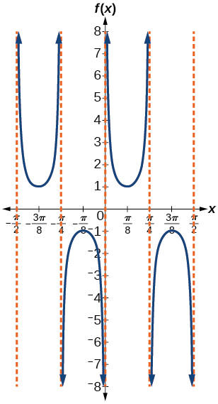
Solution
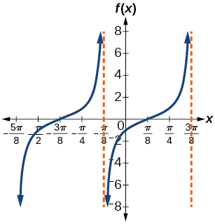

Solution
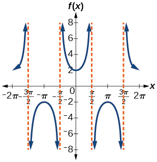

Solution
Technology
For the following exercises, use a graphing calculator to graph two periods of the given function. Note: most graphing calculators do not have a cosecant button; therefore, you will need to input as
Solution
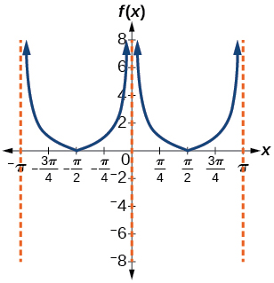
Solution
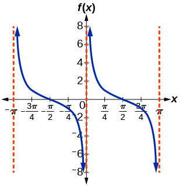
Graph What is the function shown in the graph?
Solution

Solution
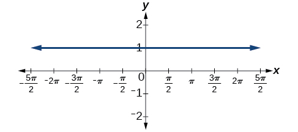
Real-World Applications
The function marks the distance in the movement of a light beam from a police car across a wall for time in seconds, and distance in feet.
- ⓐ Graph on the interval
- ⓑ Find and interpret the stretching factor, period, and asymptote.
- ⓒ Evaluate and and discuss the function’s values at those inputs.
Standing on the shore of a lake, a fisherman sights a boat far in the distance to his left. Let measured in radians, be the angle formed by the line of sight to the ship and a line due north from his position. Assume due north is 0 and is measured negative to the left and positive to the right. (See Figure 19.) The boat travels from due west to due east and, ignoring the curvature of the Earth, the distance in kilometers, from the fisherman to the boat is given by the function
- ⓐWhat is a reasonable domain for
- ⓑGraph on this domain.
- ⓒFind and discuss the meaning of any vertical asymptotes on the graph of
- ⓓCalculate and interpret Round to the second decimal place.
- ⓔCalculate and interpret Round to the second decimal place.
- ⓕWhat is the minimum distance between the fisherman and the boat? When does this occur?
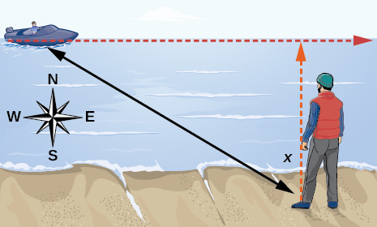
Solution
- ⓐ
- ⓑ
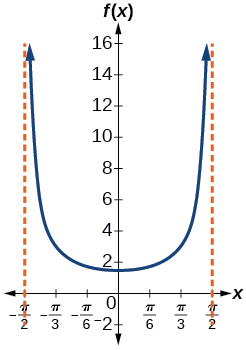
- ⓒ and the distance grows without bound as approaches —i.e., at right angles to the line representing due north, the boat would be so far away, the fisherman could not see it;
- ⓓ3; when the boat is 3 km away;
- ⓔ 1.73; when the boat is about 1.73 km away;
- ⓕ 1.5 km; when
A laser rangefinder is locked on a comet approaching Earth. The distance in kilometers, of the comet after days, for in the interval 0 to 30 days, is given by
- ⓐ Graph on the interval
- ⓑ Evaluate and interpret the information.
- ⓒ What is the minimum distance between the comet and Earth? When does this occur? To which constant in the equation does this correspond?
- ⓓ Find and discuss the meaning of any vertical asymptotes.
A video camera is focused on a rocket on a launching pad 2 miles from the camera. The angle of elevation from the ground to the rocket after seconds is
- ⓐWrite a function expressing the altitude in miles, of the rocket above the ground after seconds. Ignore the curvature of the Earth.
- ⓑGraph on the interval
- ⓒEvaluate and interpret the values and
- ⓓWhat happens to the values of as approaches 60 seconds? Interpret the meaning of this in terms of the problem.
Solution
- ⓐ
- ⓑ

- ⓒ after 0 seconds, the rocket is 0 mi above the ground; after 30 seconds, the rockets is 2 mi high;
- ⓓAs approaches 60 seconds, the values of grow increasingly large. The distance to the rocket is growing so large that the camera can no longer track it.
Analysis
Note that this is a decreasing function because